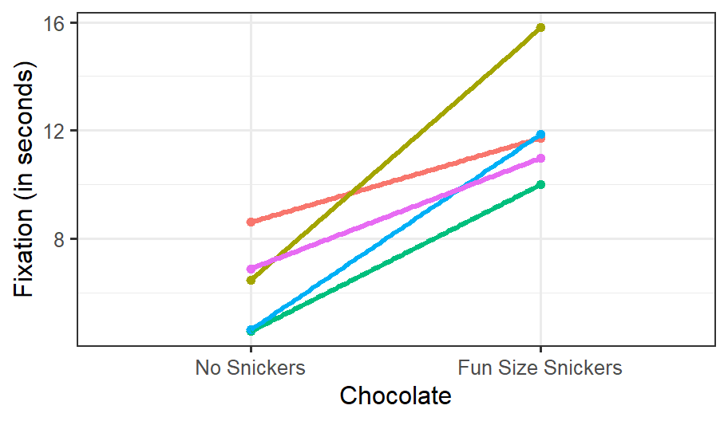
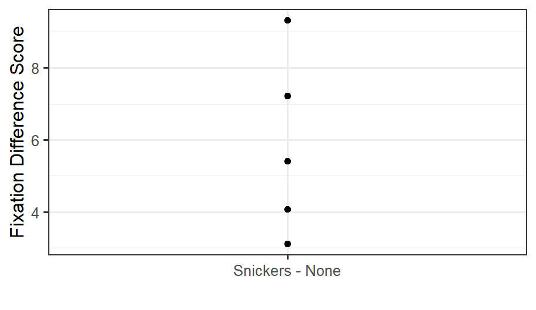
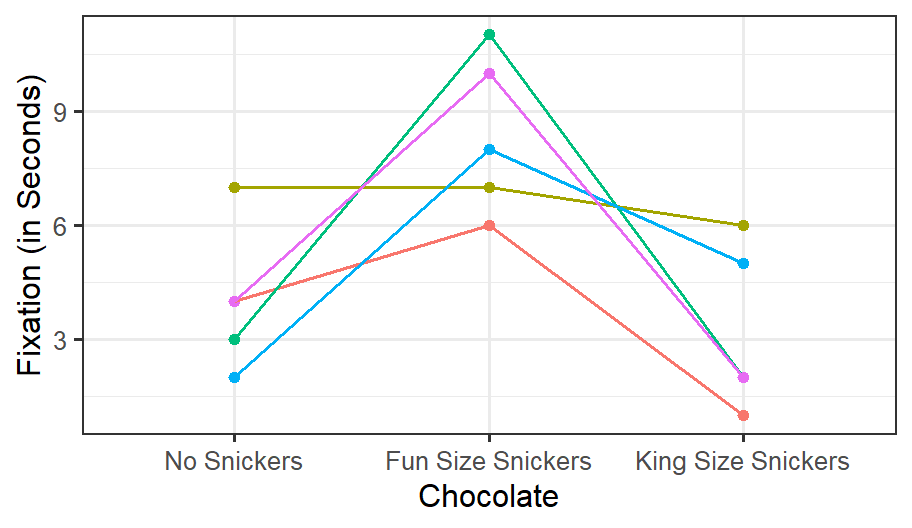

30 From the Paired t-Test to the One-Way Within-Subjects ANOVA
30.1 Types of Design
- Repeated: The same person is measured twice.
- Matched: “Doppelgangers we pretend are clones.”
- A. Natural matches, such as twins or siblings
- B. Participants matched on other characteristics, such as IQ, age, gender, or other controls
30.2 One Repeated Factor: Two-Level Designs
Does eating chocolate during a lecture increase fixation on the lecture? We measure fixation as the mean time a student’s eyes remain on the screen, in seconds per glance. We collect multiple trials per condition for each person and compare the means with a paired-samples t-test. The DV is mean fixation time. The IV is a two-level repeated factor: no chocolate in Lecture 1 versus one fun-size Snickers in Lecture 2. We simulate \(n = 5\) students measured during both lectures, with means of \(M_1 = 5\) and \(M_2 = 10\) and \(\sigma^2 = 4\). The responses across conditions are correlated at \(\rho = .4\).
30.2.1 Plot of Simulation
- Spaghetti plot per person
- Each line represents a person’s score from Lecture 1 (No Chocolate) to Lecture 2 (Chocolate).
- As you can see, most do better, while some do worse.
The correlation matrix:
| Corr Matrix | None | Snickers |
|---|---|---|
| None | 1 | 0.21 |
| Snickers | 0.21 | 1 |
The value of r is reasonably close to the \(\rho = .4\) that we simulated.
Variance per cell:
| Chocolate | Varience |
|---|---|
| No Snickers | 2.849629 |
| Fun Size Snickers | 4.867386 |
The variances are not very homogeneous, but we have an \(N\) of only 5.
30.2.2 Conduct a Paired t-Test in R
We use the t.test() function with the argument paired = TRUE. First, we reshape the data so that each row contains one participant’s scores in both conditions. This makes the pairing explicit. The \(df\) equals the number of participants minus 1.
DataSim1_Wide <- DataSim1 %>%
dplyr::select(SS, Chocolate, Fixation) %>%
pivot_wider(names_from = Chocolate, values_from = Fixation)
T1 <- with(
DataSim1_Wide,
t.test(`Fun Size Snickers`, `No Snickers`, paired = TRUE)
)
T1
Paired t-test
data: Fun Size Snickers and No Snickers
t = 5.2452, df = 4, p-value = 0.006318
alternative hypothesis: true mean difference is not equal to 0
95 percent confidence interval:
2.743944 8.915821
sample estimates:
mean difference
5.829882 30.2.2.1 APA-Style Report
The apa package can automatically convert our t-test result into APA format.
library(apa)
cat(apa(T1, format = "rmarkdown", print = FALSE))t(4) = 5.25, p = .006, d = 2.35
30.2.3 Logic of the Paired t-Test
We remove individual differences because we care about how people change from one condition to another. Although the raw data look like the spaghetti plot above, the analysis removes these individual differences by calculating a difference score: Fun-Size Snickers Condition - No Snickers Condition.
Now that we have difference scores, we will plot the dots:

30.2.3.1 One-Sample t-Test on Difference Scores
Because we have one score per person, the difference between conditions, we can run a one-sample t-test to determine whether the difference scores differ from zero.
\[t = \frac{M - \mu}{\sqrt{S^2/n}}\]
T2<-t.test(x=DataSim2$diff, y = NULL, mu=0)
T2
One Sample t-test
data: DataSim2$diff
t = 5.2452, df = 4, p-value = 0.006318
alternative hypothesis: true mean is not equal to 0
95 percent confidence interval:
2.743944 8.915821
sample estimates:
mean of x
5.829882 Notice that the results are identical to those from the paired-samples t-test.
30.2.3.2 Simplified Paired t-Test Formula
To calculate this paired t-test by hand, calculate the difference scores (\(D\)), then find their mean and variance, or \(S\). The result is identical to that from the more complex formula above, which removes individual differences using the Pearson correlation.
\[t = \frac{M_D - \mu_D}{\sqrt{S_D^2/n}}\]
30.2.4 Effect Size
There is considerable debate about calculating Cohen’s \(d\) for paired designs. The simple formula looks like Cohen’s \(d\) for a one-sample t-test, except that it uses difference scores:
\[d = \frac{M_D}{S_D}\]
30.3 One Repeated Factor: Designs with Three or More Levels
Does eating chocolate during a lecture increase fixation on the lecture? We measure fixation as the mean time a student’s eyes remain on the screen, in seconds per glance. We collect multiple trials per condition for each person and compare the means with a repeated-measures ANOVA. The DV is mean fixation time. The IV is a three-level repeated factor: no chocolate in Lecture 1, one fun-size Snickers in Lecture 2, and one king-size Snickers in Lecture 3. We simulate \(n = 5\) students measured during all three lectures, with means of \(M_1 = 5\), \(M_2 = 10\), and \(M_3 = 3\), assuming HOV with \(\sigma^2 = 4\). Responses across conditions are correlated at \(\rho = .4\).
30.3.1 Plot of Simulation
- Spaghetti plot per person
- Each line represents a person’s score across conditions

30.3.2 Repeated-Measures ANOVA Logic
In a repeated-measures ANOVA, we identify variance due to individual differences. We estimate it from the row sums, which are the sums of each participant’s scores.
30.3.2.1 One-way ANOVA Table With the formulas (conceptually simplified)
| Source | SS | DF | MS | F |
|---|---|---|---|---|
| Between | \(SS_B=nSS_{treatment}\) | \(K-1\) | \(MS_{B}=\frac{SS_B}{df_B}\) | \(\frac{MS_B}{MS_W}\) |
| Within | \(SS_W=\displaystyle \sum SS_{within}\) | \(N-K\) | \(MS_{W}=\frac{SS_W}{df_W}\) | |
| Total | \(SS_T=SS_{scores}\) | \(N-1\) |
Note: \(SS_B + SS_W = SS_T\) and \(df_B + df_W = df_T\).
30.3.2.2 One-way RM ANOVA Table With the formulas (conceptually simplified)
| Source | SS | DF | MS | F |
|---|---|---|---|---|
| \(RM_1\) | \(SS_{RM}=nSS_{all\,cell\,means}\) | \(c-1\) | \(MS_{RM}=\frac{SS_{RM}}{df_{RM}}\) | \(\frac{MS_{RM}}{MS_E}\) |
| Within | \(SS_{w}=\displaystyle \sum SS_{within}\) | |||
| \(\,Subject\,[Sub]\) | \(SS_{sub}=\frac{1}{c} SS_{subjects:\, rows\,sums}\) | \(n-1\) | \(MS_{Sub}=\frac{SS_{sub}}{df_{sub}}\) | |
| \(\,Error [Sub\,x\,RM_1]\) | \(SS_E=SS_W-SS_{sub}\) | \((n-1)(c-1)\) | \(MS_E=\frac{SS_E}{df_E}\) | |
| Total | \(SS_T=SS_{scores}\) | \(N-1\) |
Note: \(SS_{sub} + SS_E = SS_W\), \(SS_B + SS_W = SS_T\), and \(df_B + df_W = df_T\).
30.3.2.2.1 Explained vs. Unexplained Terms
Explained:
\(SS_{RM}\) = variance caused by the treatment. \(SS_{sub}\) = individual differences. We do not know why people differ, but we can parse this variance, so we have explained it.
Unexplained:
\(SS_{E}\) = variance within participants that cannot be explained. This is not individual-difference variance.
30.3.3 Assumptions
As with the paired t-test, we assume HOV (\(\sigma^2_1 = \sigma^2_2 =\sigma^2_3\)). More importantly, we assume that the correlations among the three conditions are equal (\(\rho_1 = \rho_2 = \rho_3\)). We call this compound symmetry:
\[ \mathbf{Cov} = \sigma^2\left[\begin{array} {rrrr} 1 & \rho & \rho \\ \rho & 1 & \rho \\ \rho & \rho & 1 \\ \end{array}\right] \]
When HOV and compound symmetry are met, we satisfy the assumption of homogeneity of covariance.
30.3.3.1 Sphericity
We evaluate this assumption with Mauchly’s test of sphericity, which tests the variances of the difference scores among all conditions.
\(H_0: \sigma^2_{2-1}=\sigma^2_{3-1}=\sigma^2_{3-2}\)
\(H_1: \sigma^2_{2-1}\neq\sigma^2_{3-1}\neq\sigma^2_{3-2}\)
When sphericity is violated, we reduce the df to lower the risk of Type I error. We will not cover the calculation in detail. The basic idea is that a value called \(\epsilon\) is calculated from the degree of violation. The greater the violation, the larger the df correction. The old-school approach corrected only after rejecting the null in Mauchly’s test. The modern approach always applies a sphericity correction, even when Mauchly’s test is nonsignificant. R follows the second approach by default.
There are two methods for calculating \(\epsilon\). The most common and slightly more conservative is the Greenhouse-Geisser (GG) correction. A more powerful but less common approach is the Huynh-Feldt (HF) correction. R defaults to GG, as do psychologists, but you can request HF.
30.3.4 Effect Sizes
30.3.4.1 What SPSS and Your Book Suggest
Your book suggests an effect size that is very similar to \(\eta^2_p\).
Remember in two-way ANOVA:
\[\eta_p^2 = \frac{SS_A}{SS_A+SS_W}\]
Because our error term is no longer \(SS_W\), we now use \(SS_E\).
\[\eta_p^2 = \frac{SS_{RM}}{SS_{RM}+SS_E}\]
30.3.4.2 R and Generalized Effect Size
Olejnik and Algina (2003) instead propose generalized eta-squared, which can be compared across within- and between-subjects designs and is what afex has been reporting.
\[\eta_g^2 = \frac{SS_{RM}}{SS_{RM} + SS_{sub}+ SS_E} = \frac{SS_{RM}}{SS_T} \]
You can also calculate an unbiased generalized effect size by hand or use the Excel sheets.
\[\omega_g^2 = \frac{df_{RM}(MS_{RM}-MS_E)}{MS_{sub}+ SS_T} \]
See Bakeman (2005) for additional issues concerning effect sizes in repeated-measures and mixed designs.
30.3.5 R Calculations
30.3.5.1 R Defaults
afexcalculates the repeated-measures ANOVA and automatically corrects for sphericity violations.Error(Subject ID/RM factor): This tellsafexthat participants vary as a function of the repeated-measures condition.- It reports \(\eta_g^2\) assuming a manipulated treatment.
library(afex)
Model.1<-aov_car(Fixation~ Chocolate + Error(SS/Chocolate),
data = DataSim4)
Model.1Anova Table (Type 3 tests)
Response: Fixation
Effect df MSE F ges p.value
1 Chocolate 1.69, 6.77 5.36 8.65 * .611 .015
---
Signif. codes: 0 '***' 0.001 '**' 0.01 '*' 0.05 '+' 0.1 ' ' 1
Sphericity correction method: GG 30.3.5.2 SPSS-Like Report
Use the following code to see results formatted like SPSS output:
aov_car(Fixation~ Chocolate + Error(SS/Chocolate),
data = DataSim4, return="univariate")
Univariate Type III Repeated-Measures ANOVA Assuming Sphericity
Sum Sq num Df Error SS den Df F value Pr(>F)
(Intercept) 405.6 1 13.733 4 118.1359 0.0004067 ***
Chocolate 78.4 2 36.267 8 8.6471 0.0100065 *
---
Signif. codes: 0 '***' 0.001 '**' 0.01 '*' 0.05 '.' 0.1 ' ' 1
Mauchly Tests for Sphericity
Test statistic p-value
Chocolate 0.81747 0.73911
Greenhouse-Geisser and Huynh-Feldt Corrections
for Departure from Sphericity
GG eps Pr(>F[GG])
Chocolate 0.84565 0.0155 *
---
Signif. codes: 0 '***' 0.001 '**' 0.01 '*' 0.05 '.' 0.1 ' ' 1
HF eps Pr(>F[HF])
Chocolate 1.398289 0.01000649This reports Mauchly’s test, which is nonsignificant, along with the uncorrected df and p-value. It also shows the p-values for the GG and HF corrections, if applied.
30.3.5.3 Manually Select DF Correction & \(\eta_p^2\)
You can request HF, GG, or none. You can also request \(\eta_p^2\) with pes.
aov_car(Fixation~ Chocolate + Error(SS/Chocolate),
data = DataSim4,
anova_table=list(correction = "HF", es='pes'))Anova Table (Type 3 tests)
Response: Fixation
Effect df MSE F pes p.value
1 Chocolate 2, 8 4.53 8.65 * .684 .010
---
Signif. codes: 0 '***' 0.001 '**' 0.01 '*' 0.05 '+' 0.1 ' ' 1
Sphericity correction method: HF 30.4 Challenges of Repeated Design
- Practice effects
- Carryover effects
- Order effects
- Fatigue
30.4.1 Solutions
- Counterbalancing
- Time between trials/distractor tasks
- Using a matched design
30.5 References
Bakeman, R. (2005). Recommended effect size statistics for repeated measures designs. Behavior Research Methods, 37(3), 379-384.
Olejnik, S., & Algina, J. (2003). Generalized eta and omega squared statistics: Measures of effect size for some common research designs. Psychological Methods, 8(4), 434-447. doi:10.1037/1082-989X.8.4.434